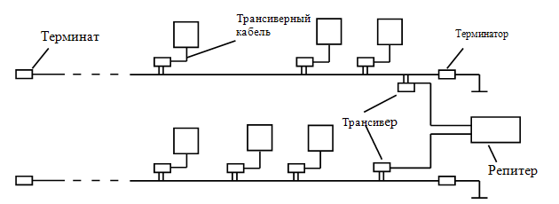
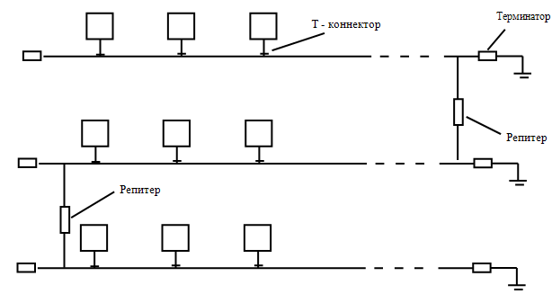
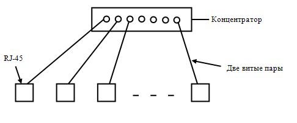
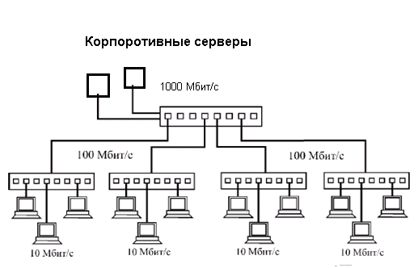
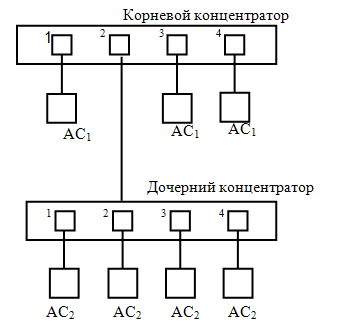
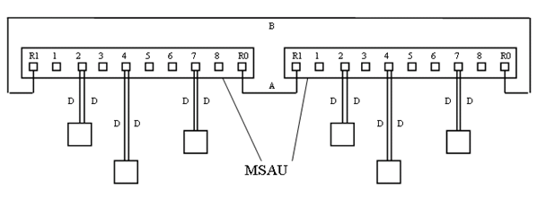
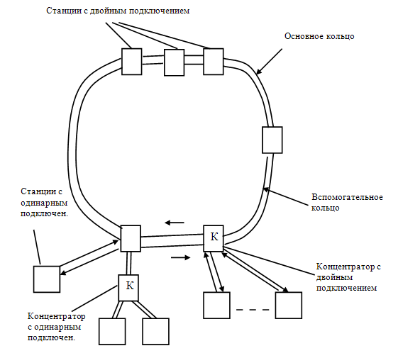

Локальная сеть Ethernet на толстом коаксиальном кабеле (стандарт 10Base-5) представляет собой классическую Ethernet (она соответствует экспериментальной сети Ethernet фирмы Xerox; 1973 г; скорость передачи данных 2,94 Мбит/с). В качестве передающей среды в этой сети, обеспечивающей скорость передачи данных до 10 Мбит/с, используется кабель спецификации 10BASE-5 (см. п. 5.13.2); в качестве доступа к среде — метод CSMA/CD (см. п. 3.1).
Конфигурация Ethernet на толстом коаксиальном кабеле приведена на рис. 6.1. Сетевые карты компьютеров подключаются к кабелю посредством трансиверов (см. п. 5.3). Трансивер устанавливается непосредственно на кабеле и питается от сетевого адаптера компьютера. Трансивер соединяется с сетевым адаптером трансиверным кабелем AUI (Attachment Unit Interface) длиной до 50 м, состоящим из 4 витых пар. Две пары проводников этого кабеля используются для передачи и приема сигнала, одна пара для — обнаружения конфликтов и четвертая пара — для подачи питания на трансивер.

Рис. 6.1. Конфигурация Ethernet на кабеле 10 BASE 5.
Сегмент кабеля 10BASE-5 (длиной до 500 м) для предотвращения отражения сигнала имеет на концах терминаторы (R=50 Ом), корпус одного из которых должен быть заземлен. Для увеличения длины локальной сети сегменты кабеля соединяются с помощью репитеров (см. п. 5.4). Ограничения для Ethernet на толстом коаксиальном кабеле приведены в табл. 6.1.
Таблица 6.1. Ограничения для Ethernet на толстом кабеле
Максимальная длина сегмента |
500 м |
Максимальное количество сегментов в сети |
5 |
Максимальная длина сети |
2,5 км |
Максимальное количество станций, подключенных к одному сегменту (если в сети есть репитеры, они тоже считаются как станции) |
100 |
Минимальное расстояние между точками подключения рабочих станций |
2,5 м |
Максимальная длина трансиверного кабеля |
50 м |
Максимальное число репитеров |
4 |
К достоинствам Ethernet на
толстом кабеле относятся:
хорошая защищенность кабеля от внешних воздействий,
сравнительно большое расстояние между узлами,
возможность простого перемещения рабочей станции в пределах длины кабеля AUI.
Недостатки Ethernet на толстом кабеле:
высокая стоимость кабеля,
сложность прокладки кабеля,
наличие специального инструмента для формирования кабельного хозяйства.
Локальная сеть Ethernet на тонком коаксиальном кабеле (стандарт 10Base-2) использует в качестве передающей среды коаксиальный кабель спецификации 10Base-2 (см. п. 5.13.2); скорость передачи данных 10 Мбит/с; метод доступа к среде — CSMA/CD.
Линейная и разветвленная конфигурации Ethernet на тонком коаксиальном кабеле приведены на рис. 6.2 и на рис. 6.3 соответственно. Сетевые адаптеры компьютеров, которые в этой сети выполняют и функции трансивера, подключаются к гибкому тонкому кабелю с помощью T-коннекторов (см. п. 5.3). Кабель в такой сети висит на сетевом адаптере, что не только затрудняет физическое перемещение компьютеров, но и чревато нарушением работоспособности сети. Разрыв (по неосторожности, например, уборщицей) приводит не только к нарушению работоспособности сети, но может привести и к «выгоранию» сетевых карт. Эта особенность сети Ethernet на тонком кабеле является главным ее недостатком.

Рис. 6.2. Линейная конфигурация Ethernet 10BASE-2.

Рис. 6.3. Разветвленная конфигурация Ethernet 10BASE-2
Ограничения для Ethernet на тонком кабеле приведены в табл. 6.2.
Таблица 6.2. Ограничения для Ethernet на тонком коаксиальном кабеле
Максимальная длина сегмента |
185 м |
Максимальное количество сегментов в сети |
5 |
Максимальная длина сети |
925 м |
Максимальное количество станций, подключенных к одному сегменту (если в сети есть репитеры, они тоже считаются как станции) |
30 |
Минимальное расстояние между точками подключения рабочих станций |
0,5 м |
Максимальное число репитеров |
4 |
Главный недостаток Ethernet на тонком коаксиальном кабеле: высокая вероятность повреждения кабеля; при разомкнутых контурах заземления возможно выгорание сетевых адаптеров.
Локальная сеть Ethernet на основе стандарта 10Base-T (IEEE 802.3i; 1991г.) использует в качестве передающей среды витую пару UTP (см. п.5.13.1); скорость передачи данных 10 Мбит/с; метод доступа к среде — CSMA/CD. Конфигурации Ethernet 10BASE–T приведены на рис. 6.4.
Соединение компьютеров с концентратором осуществляются посредством двух витых пар: одна пара используется для передачи данных от компьютера к концентратору, другая от концентратора к компьютеру, так что физически 10BASE–T имеет топологию «звезда», логически же 10BASE–T представляет собой топологию шины.

Рис. 6.4. Конфигурация Ethernet 10Base-T.
Ограничения для Ethernet 10Base-T приведены в табл. 6.3.
Таблица 6.3. Ограничения для Ethernet 10Base-T
Максимально допустимое число сегментов |
1024 |
Максимальное число сегментов с узлами |
1024 |
Максимальная длина сегментов |
100 м. |
Максимальное число узлов на сегменте |
2 |
Максимальное число узлов в сети |
1024 |
Максимальное число концентраторов цепочки (между двумя компьютерами) |
4 |
Концентраторы и коммутаторы в сети Ethernet 10Base-T можно объединять между собой с помощью тонкого коаксиальном кабеля. При расширении сети ключевую роль играют коммутаторы; они позволяют выйти за рамки спецификации Ethernet, так как подсчет концентраторов в цепочке после прохождения коммутатора начинается с нуля
К достоинствам Ethernet 10Base-T относятся:
Функционально сеть стандарта 10Base-F состоит из тех же элементов, что и сеть 10Base-T. Используется та же топология и функциональные элементы, что и в 10Base-T: концентратор, к портам которого с помощью кабеля подключаются сетевые адаптеры компьютеров. Однако в качестве среды передачи данных применяется оптоволокно. Для соединения адаптера с концентратором используются два оптоволокна: одно на передачу, другое на прием сигнала. Существует несколько разновидностей 10Base-F: FOIRL, 10Base-FL, 10Base-FL, 10Base-FP.
Первым стандартом Комитета 802.3 для оптоволокна в сетях Ethernet был предложенный в1987 году Стандарт FOIRL (Fiber Optic Inter-Repeater Link). Он был предназначен для обеспечения информационного взаимодействия повторителей, находящихся на значительном расстоянии друг от друга (до 1000 м). В последующем потерял актуальность в связи с появлением других сетевые технологий семейства 10 Base F.
Стандарт 10Base-FL предназначен для соединения конечных узлов с концентратором и работает с сегментами оптоволокна длиной не более 2000 м при общей длине сети не более 2500 м. Максимальное число повторителей — 4. Концентратор в сети может быть активным (содержит электронные схемы для обнаружения и ретрансляции сигналов) или пассивным (с оптикой, расщепляющей световой сигнал – небольшое число каналов).
Стандарт 10Base-FB предназначен для магистрального соединения концентраторов. Он позволяет иметь в сети до 5 повторителей при максимальной длине одного сегмента 2000 м и максимальной длине сети 2740 м. Концентраторы стандарта 10Base-FB могут поддерживать резервные связи, переходя на резервный порт при обнаружении отказа основного. Концентраторы этого стандарта передают данные и сигналы простоя линии синхронно, поэтому биты синхронизации кадра не нужны, и они не передаются. Поэтому стандарт 10Base-FB, называют также синхронный Ethernet. Стандарты 10Base-FL и 10Base-FB не совместимы между собой.
Стандарт 10 Base FP (Fiber Passive) предназначен для обеспечения взаимодействия конечных узлов локальной сети с использованием принципа пассивного оптического разветвителя. Стандарт позволяет обеспечить взаимодействие 33 рабочих станций находящихся на удалении до 500 м.
Ограничения для Ethernet 10Base-FL приведены в табл. 6.4.
Таблица 6.4. Ограничения для Ethernet 10Base-FL
Максимально допустимое число сегментов |
1024 |
Максимальное число сегментов с узлами |
1024 |
Максимальная длина сегментов |
2000 м. |
Максимальное число узлов на сегмент |
2 |
Максимальное число узлов в сети |
1024 |
Максимальное число концентраторов в цепочке (между двумя компьютерами) |
4 |
Достоинства и недостатки сети 10Base-FL обусловлены достоинствами и недостатками оптоволоконной технологии (см. п. 5.13. 3). Из-за низкой скорости передачи данных сеть 10Base-FL потеряла актуальность. На начальном этапе она была привлекательна большим размером сегмента и высокой помехозащищенностью.
Fast Ethernet (быстрый Ethernet, скорость передачи 100 Мбит/c) принят в качестве стандарта 802.3u Комитетом IEEE 802 в мае 1995; использует тот же протокол и то же звездообразное соединение, что и 10BASE–Т. Вместе с этим Fast Ethernet имеет более сложную структуру физического уровня, обусловленную тем, что в этом стандарте предусмотрено использование трех вариантов кабельных систем. Передача данных в сети 100 BASE–T может осуществляться как в полудуплексном режиме, так и в полнодуплексном режиме
Стандарт IEEE 802.3u 100 BASE–T специализирует три типа кабеля:
Основные достоинства технологии Fast Ethernet:
Существенным отличием Fast Ethernet от Ethernet 10BASE-T является то, что в 100 BASE–T между двумя компьютерами допускается не более двух кабельных сегментов, т.е. один концентратор (в то время как в 10 BASE их не более 5).
Работа над стандартом Gigabit Ethernet (GE) началась в 1995 году. В 1998 году был принят стандарт IEEE 802.3z (1000BASE-SX, 1000BASE-LX и 1000BASE-CX), а в 1999 году – стандарт IEEE 802.3ab (1000BASE-T).
Обобщенные характеристики спецификаций 1000BASE-SX, 1000BASE-LX, 1000BASE-CX приведены в табл. 6.5 – табл. 6.7 соответственно.
Таблица 6.5. Обобщенные характеристики технологии1000BASE-SX
|
Скорость передачи данных |
1000 Мбит/сек |
|
Тип используемого кабеля |
(50 или 62.5) мкм |
|
Тип используемого излучателя |
850 нм |
|
Максимальная длина сегмента |
До 500 м |
Таблица 6.6. Обобщенные характеристики технологии 1000BASE-LX
Скорость передачи данных |
1000 Мбит/сек |
|---|---|
Тип используемого кабеля |
5-8 мкм |
Тип используемого излучателя |
1310 нм |
Максимальная длина сегмента |
До 5000 м |
Таблица 6.7. Обобщенные характеристики технологии 1000BASE-CX
|
Скорость передачи данных |
1000 Мбит/сек |
|
Тип используемого кабеля |
STP 150 Ом |
|
Максимальная длина сегмента |
До 25 м |
Спецификация 1000BASE-SX предполагает использование в качестве передающей среды многомодовое оптоволокно (с короткой длиной волны, S – short); 1000BASE-LX – одномодовое оптоволокно (с длинной волной, L – long). Спецификация 1000Base-CX предполагает использование в качестве среды передачи данных кабель типа экранированную витую пару STP.
Спецификация IEEE 802.3ab 1000 Base-T предполагает использование кабеля UTP категории 5e или категории 6. Для передачи данных используется все 4 пары кабеля UTP. Максимальная длина сегмента 100 метров.
В технологии Gigabit Ethernet сохраняются форматы кадров Ethernet. Внесены изменения в физический уровень. Разрешается передавать несколько кадров подряд, не освобождая физическую среду. В Gigabit Ethernet используется метод кодирования, построенный по тому же принципу, что и код 4В/5В в сети FDDI, позволяющий сохранить самосинхронизацию и не требующий удвоения полосы частот, как в случае манчестерского кода. Передача данных в сети Gigabit Ethernet может осуществляться как в полудуплексном режиме (с сохранением метода доступа CSMA/CD), так и в более быстром полнодуплексном режиме (аналогично сети Fast Ethernet), который обеспечивает отсутствие конфликтов.
Основные достоинства Gigabit Ethernet:
1. Низкая стоимость по сравнению с другими технологиями.
2. Низкие затраты на обучение персонала, в сравнении с другими технологиями.
3. Поддержка стандарта многими производителями.
4.Соединение коммутаторов Fast Ethernet по Gigabit Ethernet позволяет резко увеличить пропускную способность магистрали ЛВС.
5. Установка сетевой платы Gigabit Ethernet на сервер дает возможность расширить канал с сервером и увеличить производительность пользователей мощных рабочих станций.
6.Простота перехода от существующих сетей к Gigabit Ethernet.
7. Низкие эксплуатационные затраты.
Стандарт Gigabit Ethernet находит применение в корпоративных сетях (см. рис. 6.5). Нижние уровни таких сетей работают на 100 Мбит/с и ниже, а магистральные и их объединения на Gigabit Ethernet. технология Gigabit Ethernet позволяет увеличить скорость передачи в восемь (при замене ATM, работающей на скорости 155 Мб/с) или в 10 раз (при замене Fast Ethernet). Стандарт Gigabit Ethernet используется также для построения городских оптических сетей.

Рис. 6.5. Применение технологии Gigabit Ethernet
Развитие GE привело к появлению маршрутизирующих коммутаторов (малое время задержки; 7 млн. пакетов в секунду при маршрутизации и коммутации) и стало хорошей альтернативой дорогостоящей технологии АТМ.
Технология 10 Gigabit Ethernet (10GE) обеспечивает передачу данных со скоростью 10 Гбит/с. Стандарт IEEE 802.3ae (утвержден 15 июня 2002 г.) определяет для оптоволокна три семейства физических уровней: 10GBASE-X, 10GBASE-R и 10GBASE-W. Эти семейства различаются методами кодирования, наличием или отсутствием интерфейса WAN для согласования с сетями SONET OC-192, а также реализацией PMD (Physical Medium Dependent), отвечающего за передачу сигналов в физической среде.
10GBASE-X использует схему кодирования сигнала 8 b/10. Подуровни интерфейса WAN отсутствуют. 10GBASE-X предусматривает одну спецификацию PMD: 10GBASE-LX4.
10GBASE-R базируется на схеме кодирования 64 b/66 b. Имеет подуровень интерфейса WAN и три типа PMD: 10GBASE-SR, 10GBASE-LR и 10GBASE-ER.
10GBASE-W определяет инкапсуляцию 64b/66 b-кодированных данных во фрейм SONET OC-192. Имеет следующие спецификации PMD: 10GBASE-SW, 10GBASE-LW и 10GBASE-EW.
Максимальная дина сегмента (оптической линии) зависит от вида оптоволокна, а так же от типа излучателя и изменяется от 65 метров для 10GBASE-SR до 40 000 м для 10GBASE-EW.
Существует также стандарт 10 Gigabit Ethernet по меди (IEEE 802.3ak): 10GBASE-CX4. Он применяется в центрах обработки данных (на расстояния до 20 метров). Двунаправленный канал образуется с помощью 4-х отдельных экранированных пар в каждом направлении. Применение этого стандарта в центрах обработки данных обусловлено дороговизной оптических трансиверов (до 15 тыс. долларов).
В 10GE не применяется метод CSMA/CD, который сдерживал производительность сетей Ethernet. Физический уровень стандарта 10GE имеет интерфейс как для локальных, так и интерфейс для глобальный сетей. Последний интерфейс по существу является расширением первого. Различие между этими интерфейсами проявляется лишь на уровне кодирования.
10GE в основном ориентирован на крупные транспортные и магистральные сети и может применяться для объединения локальных сетей офисов (расположенных на расстоянии до 40 километров друг от друга). Объединение локальных сетей удаленных офисов с использованием 10GE может быть реализовано двумя способами:
В первом случае оптическое волокно используется для подключения офисов по принципу точка–точка. Поэтому для образования структуры, которая обеспечивает связь каждого компонента с каждым, потребуется дополнительные линии и дополнительные порты.
Использование технологии DWDM (см. п. 1.5) позволяет существенно уменьшить затраты на построение структуры каждый–с каждым. В данном случае удаленные офисы подключаются к кольцу (оптическому облаку), по которому передается одновременно несколько информационных потоков. Один из этих кольцевых потоков используется для организации виртуального информационного канала между подразделениями.
Существенной особенностью стандарта IEEE 802.3ae является способность оборудования 10GE взаимодействовать с сетями SONET/SDH. Так что имеется возможность передавать пакеты Ethernet по каналам SONET/SDH. В результате экспансия технологии Ethernet на распределенные городские сети, которая началась с появлением стандарта Gigabit Ethernet, теперь распространятся и на глобальные сети.
Эта сеть имеет скорость передачи данных 100 Мб/с и комбинирует элементы сетей Ethernet и Token Ring. ПУЛК (LLC) сети 100VG-AnyLAN соответствует стандарту IEEE 802.2, а ПУДС (MAC) -- специально разработанному стандарту 802.12 (1995 г.). Основное отличие данной сети от других ЛС заключается в методе доступа. В технологии 100VG-AnyLAN определены новый метод доступа DDP (Demand Priority Protocol) и новая схема квартетного кодирования Quartet Coding. Метод доступа DDP позволяет, в отличие от метода доступа Ethernet, обеспечить отсутствие коллизий, а в отличие от маркерного метода доступа Token Ring – сократить время доступа (за счет исключения задержек маркера на его вращение по кольцу).
Корневой (родительский) концентратор (см. рис. 6.6), связан с узлами сети по топологии «звезда» и представляет собой интеллектуальный контроллер, который циклически сканирует порты, проверяя наличие запросов на передачу кадров. Концентратор принимает кадр от узла, выдавшего запрос, и передает его по адресу.
При наличии на всех абонентских системах (АС) запросов только одного уровня приоритета (высокого или обычного) обслуживание заявок осуществляется в следующем порядке (рис. 6.6):
AC11 -> AC21 -> AC22 -> AC23 -> AC24 -> AC13 -> AC14

Рис. 6.6. Конфигурация сети 100VG-AnyLAN
Если же будет послан запрос с более высоким приоритетом, то концентратор обслужит высокий приоритет вне очереди, а затем продолжит работу по вышеописанному алгоритму.
Каждый концентратор (допускается каскадирование до 5 уровней) может быть сконфигурирован на поддержку либо кадров Ethernet (802.3), либо кадров Token Ring (802.5). Все концентраторы, расположенные в одном и том же логическом сегменте должны быть сконфигурированы на поддержку кадров одного типа. Для соединения логических сегментов 100VG-AnyLAN, использующих разные форматы кадров, нужен мост, коммутатор или маршрутизатор. Максимальный размер сети составляет 8000 м, длина сегмента для UTP 5 категории 200 м, для оптоволокна — 2000 м.
Сеть Token Ring разработана фирмой IBM в 1970-х годах. Она практически идентична спецификации IEEE 802.5, в основу которой положен маркерный метод доступа Token Ring (см. п.3.1). Сети Token Ring работают с двумя скоростями: 4 Мбит/с и 16 Мбит/с. Первая скорость (4.16 Мбит/с) заложена в стандарте 802.5, а вторая является стандартом де-факто (результат модернизации технологии Token Ring).
Сеть Token Ring рассчитана на кольцевую топологию или топологию физической звезды с логическим кольцом, оконечные станции которой подключаются к концентраторам MSAU (Multi Station Access Unit), см. рис. 6.7.

Рис. 6.7. Конфигурация сети Token Ring.
Устройства многостанционного доступа MSAU, объединяются друг с другом, образуя кольцо, при этом если станция отключится, то MSAU зашунтирует ее, обеспечивая прохождение пакетов. Стандарт IEEE 802.5 (в отличие от Ethernet) гарантирует стабильность пропускной способности. Сети Token Ring имеют встроенные средства диагностики, они более приспособлены для решения задач реального времени, но в то же время и более дороги.
Стандарт IEEE 802.5 использует систему приоритетов, которая позволяет некоторым станциям пользоваться сетью чаще остальных. Для этих целей кадры IEEE 802.5 имеют в поле управления доступом биты приоритета и резервирование приоритета (см. п.3.4). Только станции с приоритетом равным или выше, чем приоритет маркера, могут им завладеть. Сети Token Ring имеют несколько механизмов для обнаружения и предотвращения влияния сетевых сбоев и ошибок.
Ограничения на сети Token Ring приведены в табл. 6.8.
Таблица . 6.8. Ограничения на сети Token Ring
Тип кабеля |
UTP, STP, оптоволокно |
Максимальное количество MSAU |
33 |
Максимальное расстояние между узлами |
Для UTP – 45,5 м, оптоволокно и STP – до 100 м |
Максимальная длина соединительного кабеля между MSAU |
Для UTP – 45,5 м, оптоволокно и STP – 200 м |
Минимальная длина кабеля, соединяющего MSAU (А) |
2,5 м |
Максимальная общая длина кабеля, соединяющего все MSAU (А+В) |
121,2 м для UTP, для волоконно-оптического кабеля – до нескольких км |
Для подключения к магистральному кабелю могут использоваться: пассивное устройство (для подключения одной станции), устройства многостанционного доступа (MAU, MSAU), интеллектуальное устройство многостанционного доступа SMAU.
К достоинствам Token Ring относятся:
Недостатки сети: дорогое оборудование, сложность в диагностике и высокая профессиональная подготовка обслуживающего персонала.
В основе сети лежит набор сетевых стандартов ANSI X3T9.5 (неформально закрепилось название FDDI — Fiber Distributed Data Interface). FDDI обеспечивает широкополосную передачу данных по оптоволоконному кабелю со скоростью 100 Мбит/с. В последующем стандарт FDDI был признан в качестве международного стандарта ISO 9314.
Сеть FDDI по существу представляет собой усовершенствованную Token Ring. В сети FDDI (см. рис. 6.7) используется два кольца с циркуляцией маркеров в противоположных направлениях, что позволяет FDDI работать вопреки отказам сети. Максимальная длина сети (без мостов) 200 км (100 км на кольцо); максимальное расстояние между узлами 2 км; максимальное количество узлов 500.
При отказах устройства или при разрыве кабеля одно из колец будет разорвано. В этом случае данные маршрутизируются во вспомогательное кольцо и направляются по нему в противоположное направление. При достижении разрывов в сети маршрутизация изменится на обратную.
В FDDI применяется более сложный метод доступа к сети, чем в Token Ring. Как и в Token Ring, по кольцу передается маркер, и владельцу маркера разрешается передавать кадры FDDI. В отличие от Token Ring, в сети FDDI может одновременно циркулировать несколько кадров. Владельцу маркера разрешается передавать следующий кадр, не дождавшись возвращения первого кадра, при этом владельцу маркера разрешается после передачи своего кадра освободить маркер и передать его следующей станции в кольцо, не дожидаясь полного оборота маркера по кольцу.
В сетях FDDI может использоваться метод резервирования регулярных интервалов передачи для отдельных станций (так называемый синхронный режим передач). В такие регулярные интервалы отправлять данные могут только эти станции (им не надо захватывать маркер). Это факультативное средство стандарта FDDI.

Рис. 6.7. Конфигурация сети FDDI
В сетях FDDI могут использоваться и так называемые многокадровые диалоги (факультативное средство). Они позволяют станции с маркером передавать ограниченный маркер (маркер, допускающий ответ только станции – отправителю). Такой маркер посылается конкретной станции, которой разрешается передавать ограниченные маркеры и кадры первой станции.
Большинство сетевых технологий в настоящее время поддерживают оптоволоконные кабели в качестве одного из вариантов физического уровня, однако FDDI остается наиболее отработанной высокоскоростной, прошедшей проверку технологией.
В технологии асинхронного режима передачи данных ATM (Asynchronous Transfer Mode) данные любой природы передаются пакетами (ячейками) фиксированной и малой длины (53 байта, 5 из которых занимает заголовок; вместо адресов в этих ячейках указывается маршрут потока данных). Небольшая длина пакетов позволяет обеспечить небольшие задержки при передаче пакетов, требующих постоянного темпа передачи, характерного для мультимедийного трафика.
Сеть ATM является коммутируемой с соединениями точка-точка, ее структура похожа телефонную сеть (конечные станции соединяются с коммутаторами нижнего уровня, которые в свою очередь соединяются с коммутаторами более высоких уровней и т.д.). В этой сети существует 2 типа каналов: постоянный виртуальный канал (канал, который создается между коммутатором один раз и обслуживает все коммуникации между двумя устройствами) и временный канал, устанавливаемый только на период обмена данными между устройствами. В ATM используются волоконно-оптические кабели или витая пара 5-й категории.
Сети ATM хорошо масштабируются и обеспечивают скорости передачи данных в диапазоне от 25 Мбит/с до 39.81 Гбит/с (см. табл. 6.9). Такой широкий диапазон скоростей позволяет применять ATM в самых различных конфигурациях сетей. При совместном использовании технологий ATM и SONET (для передачи трафика сети ATM) скорость передачи может достигать 39.81 Гбит/с.
Таблица 6.9. Скорости передачи данных ATM.
Поставщики коммуникационных услуг: T1/Е1 |
1.544/2.048 Мбит/с |
ATM – 25 |
25 Мбит/с (по витой паре) |
Поставщики телекоммуникационных услуг T3/Е3 |
44.736/34.368 Мбит/с |
OC – 1 SONET |
51.84 Мбит/с |
OC – 3 SONET |
155 Мбит/с |
OC – 12 SONET |
622 Мбит/с |
OC – 48 SONET |
2,4 Гбит/с |
OC – 192 SONET |
9.953 Гбит/с |
OC – 768 SONET |
39.81 Гбит/с |
Сетевая технология ATM находит применение в магистральных и корпоративных сетях. Однако ATM является дорогой и сложной технологией, требующей высокой квалификации обслуживающего персонала. Нишу, занимаемую АТМ, сильно потеснили технологии Gigabit Ethernet и 10Gigabit Ethernet, которые примерно раз в пять дешевле АТМ и сравнительно просты в эксплуатации.